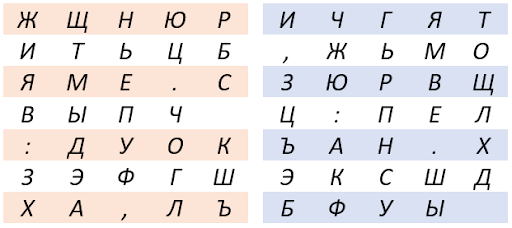
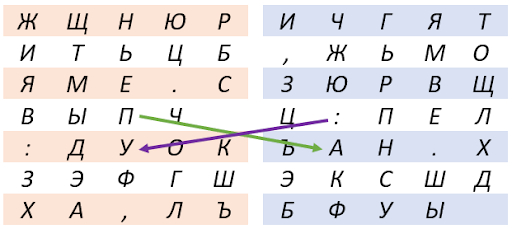

Пример шифрования:
Рассмотрим следующий пример заполнения квадратов.

Пусть мы хотим передать сообщение "ПАРОЛЬ: КИНО". Разбиваем сообщение на биграммы: ПА РО ЛЬ :_(пробел) КИ НО. В левом квадрате находим первую букву биграммы, в правом – вторую.
По диагоналям прямоугольника находим соответствующую паре ПА пару :У.

Паре букв РО соответствует пара букв ТБ. Аналогично зашифровываем остальные биграммы.
Получаем шифртекст: “:УТБУЦХХЪРТЬ”.
Отдельно рассмотрим случай зашифрования биграммы, буквы которой стоят в одной строке.
Например, зашифруем биграмму НЯ. Н находится в первой строке, третьем столбце левого квадрата, а Я в первой строке, четвёртом столбце правого квадрата. Первая буква зашифрованной биграммы берётся из правого квадрата в первой строке, в третьем столбце (потому что в левом квадрате на данной позиции расположена буква Н - первая буква исходной биграммы). Вторая буква зашифрованной биграммы берётся из левого квадрата, в первой строке, в четвёртом столбце (то есть в позиции, в которой находится вторая буква исходной биграммы в правом квадрате). Таким образом, биграмма НЯ перейдёт в ГЮ.